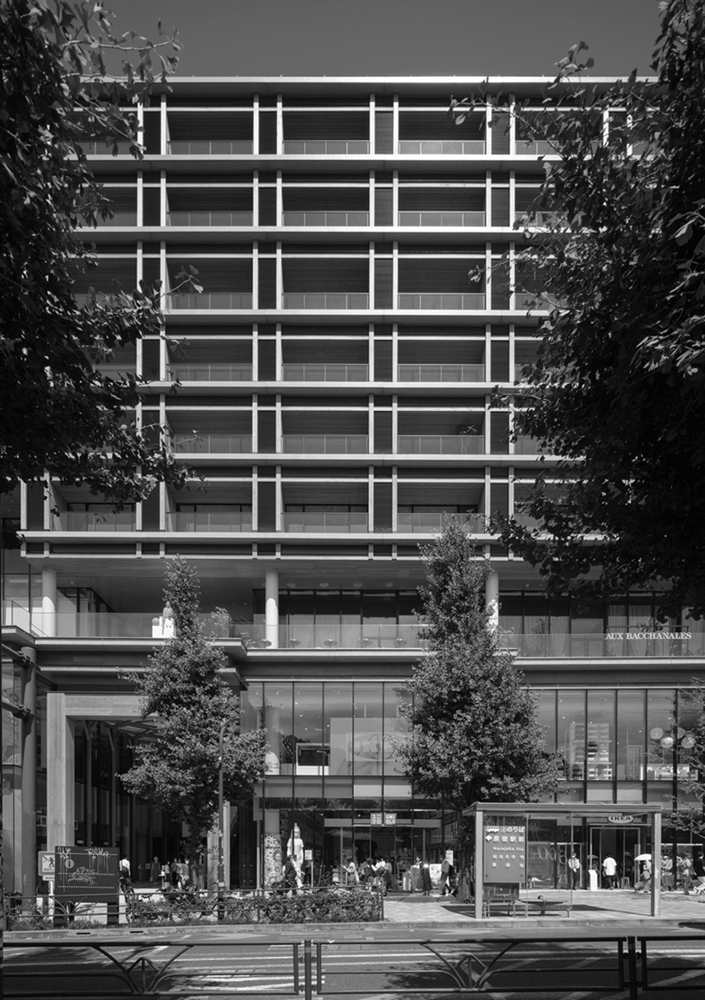
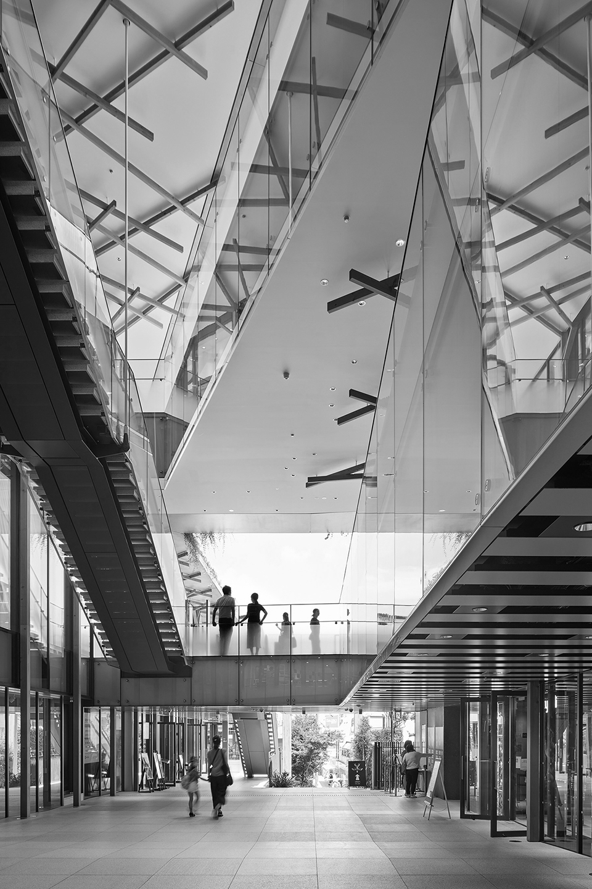
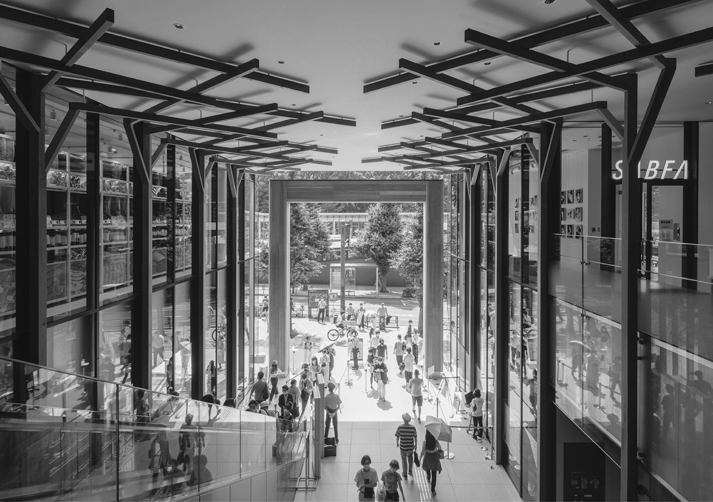
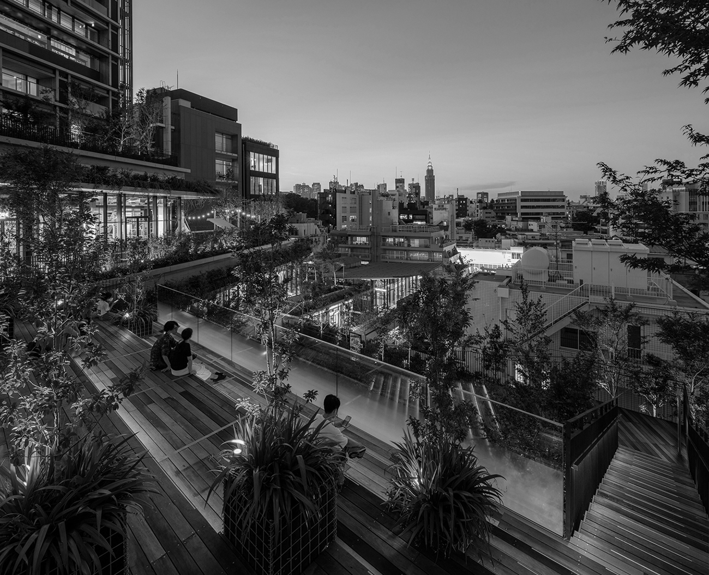
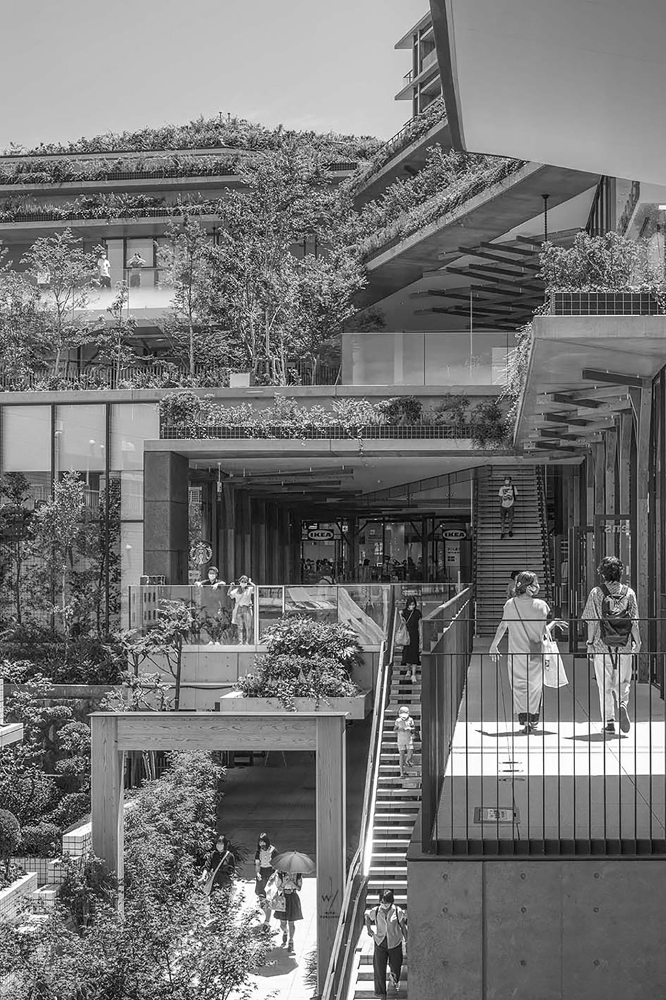
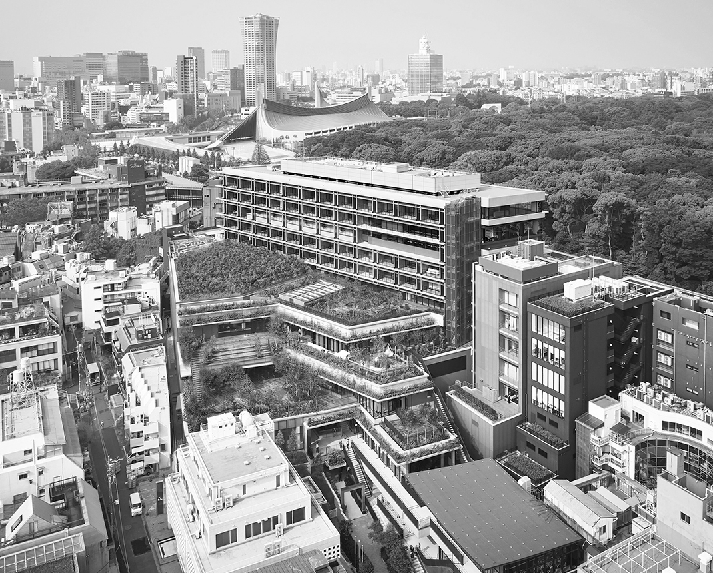

With Harajuku
위드 하라주쿠
Toyo Ito이토 토요
伊東豊雄 · 1941–2022
Pritzker Architecture Prize, 2013
Toyo Ito & Associates, Architects
하라주쿠역에서 나오는 동안 줄곧 왼편에 창을 통해 보이는 이곳은 시부야의 미야시타파크와 마찬가지로 2020년 도쿄 올림픽 시기에 맞춰 새로 올려진 건물인데요.


이곳은 언뜻 보면 목조건물인가 싶지만, 사실은 철골 구조 위에 목재를 덮어 마감한 주상복합 건물로 중앙에 입구에는 신사의 도리이를 연상시키는 듯한 거대한 문이 세워져 있는데, 이 목적 또한 옆에 있는 유명한 관광지인 메이지 신궁과의 연결성을 추가하려 하기 위함이라고 합니다. 지나치게 현대적인 소재보다는 노출 콘크리트와 나무를 사용해서 메이지 신궁처럼 세월의 흔적이 고스란히 드러나도록 한 것이죠. 덕분에 주변 경관과 어울리면서도 현대적인 구조의 상가가 완성되었습니다.
메이지 신궁을 둘러싼 숲을 나타내듯 층마다 나무 기둥이 진짜 나무처럼 가지를 치고 있죠. 마치 가로수의 나뭇가지가 컨셉인 오모테산도의 보테가 베네타 매장 같은 느낌? 이 얘기를 꺼낸 이유는 이 건물에 공동 설계를 맡은 건축가가 앞서 말한 보테가베네타가 들어간 건물의 설계를 한 이토 토요이기 때문이죠. 물론 이 두 개가 서로 연관성이 있다는 근거는 어디에도 없지만, 이 우연히 이렇게라도 이야기 거리를 만들어주니 저는 어찌 됐든 좋다고 생각합니다. 정면에 유리벽을 계단식으로 나눠서 하나의 건물임에도 블록마다 독립된 상가처럼 보이게 하는 것도 특징이죠.


일반적인 면적을 가진 주변 상가들과의 조화까지 생각한 모습이 인상적입니다. 특히 뒤쪽에 계단식으로 위치한 쉼터에서는 상대적으로 조용하게 휴식을 취할 수 있습니다. 물론 정문 쪽의 카페에서 숲세권 뷰을 감상하는 것도 아주 좋지만, 하라주쿠역 앞의 대로변이기 때문에 소음 공해가 자주 있어서, 휴식은 반대편에서 취하는 걸 추천하고 싶습니다.

